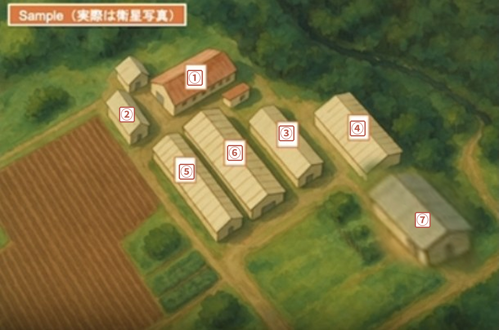

蓄積型（K式）の流れ
各ステップを押すと、その説明へ移動します
申請のしかた
Googleアカウントを用意 → 農場のGoogle Map情報 → 申請フォームで「K式」を選ぶ → 共有フォルダのアドレスがメールで届く
申請のしかた（共通）
1
Googleアカウント
を用意
個人のものでOK
📁 センター側の
共有フォルダを使うので
ご自身のDriveは
圧迫しません
2
農場の
Google Map情報
どれか1つ
🔗 共有リンク
＋ Plus Code
🧭 緯度・経度
3
申請フォーム
から申請
実施方法を選ぶ
横断パッケージ蓄積型（K式）
4
センターから
メールが届く
共有フォルダの
アドレス
Google Map情報の例（どれか1つでOK）
🔗 共有リンク「共有」で表示されるリンクのコピー
例：https://maps.app.goo.gl/YRZjwykURuxgmoTQA
＋ Plus CodePlus Codeのコピー
例：C872+8V 泉佐野市、大阪府
🧭 緯度・経度緯度・経度の情報
例：34°24'47.7"N 135°18'09.5"E または 34.413250, 135.302639
配置図の修正（記入例）
センターが番号をふった配置図を確認し、表に牛舎の詳細を書きます
番号をチェック「農場名 農場配置ファイル」で、牛舎と思われる建物に番号がふってあります。番号がおかしいときは修正
表に牛舎詳細を記入それぞれの番号に、どんな牛を飼っているか（牛の段階・飼い方）を書く

農場配置ファイルの記入例（実際は衛星写真）
| 番号 | 牛舎詳細 |
|---|
| ① | 搾乳牛舎 |
| ② | 分娩房 |
| ③ | 母牛舎（分娩房に移動する前） |
| ④ | 哺乳牛舎（ハッチ・哺乳ロボット） |
| ⑤ | 育成牛舎（離乳後・群飼い） |
| ⑥ | 育成牛舎（離乳後・群飼い） |
| ⑦ | 育成牛舎（135日齢より上） |
センターとはメールでやりとり
▼ この配置図をもとに、次の「Zoneとは」「Zoneの登録」でZoneを決めます
Zoneとは
牛の段階・収容方法・空間と換気・飼料と哺乳の4つが同じ場所が1つのZone
ZoneとはK式
Zoneは「建物」ではなく、飼養条件が同じ牛のいる「場所」です
★ Zoneを登録する場所
母牛分娩60日前からの母牛が
いる場所分娩房、分娩前の牛舎など
子牛135日齢までの子牛が
いる場所ハッチ、ロボット、群飼いなど
この2つの場所を、次のルールでZoneに分けて登録します ▼
次の4つが、すべて同じ場所 ＝ 1つのZone1つでも違えば、別のZoneにします
1牛の段階（ステージ）
母牛（分娩60日前〜）
哺乳（離乳前） ／ 離乳後
2収容方法
個別（ハッチ・個別ペン）
群飼い ／ 自動哺乳（ロボット）
3空間・換気
屋外／屋内
壁やカーテンで仕切られた区画
換気の方法
4飼料・哺乳
哺乳の方法・ミルクの種類
スターター、離乳後の飼料
1つでも違う
→ 別のZone（同じ建物でも）
同じ建物内にハッチとロボット → 2 Zone
4つとも同じ
→ 1つのZone（建物が違っても）
大型農場は、代表1牛舎を選べばOK
Zoneの登録
分娩60日前からの母牛と、135日齢までの子牛がいる場所を登録
Zoneの登録の流れK式
配置図の修正とZone登録は、獣医師が行います
3
獣医師が
Zoneを登録
母牛：分娩60日前〜
子牛：135日齢まで
例：こんな農場なら 5 Zone
牛舎番号7
育成牛（135日齢より上）
Zoneにしない
牛舎番号4 同じ牛舎でも、条件がちがえば2つのZone
Zoneにする灰色 ＝ Zoneにしない
Zone名は短く（例：Z1分娩房、Z3ハッチ）。個体の動画ではZone名を声で、Zoneの動画では最初にZoneカードを写す
キットの中身
NPS採取用チューブ25本（色付きキャップ：緑16・橙6・赤3）と白カード5枚
キットの中身K式
1農場に1コンテナ。チューブには番号があらかじめ書いてあります
NPS採取用チューブ25本 白カード5枚 （色と日齢で分けています）
| どんな牛 | 0〜30日齢 | 31〜90日齢 | 91〜135日齢 | 計 |
|---|
| 緑 | 発症していない牛採材前14日以内に抗菌薬なし | 4 | 8 | 4 | 16 |
| 橙 | 発症した牛初診で治療歴なし | 1 | 4 | 1 | 6 |
| 赤 | 発症して治療している牛原因さがし（追加の採材） | 日齢の区分なし | 3 |
| W白カード | 胸囲だけ測る牛NPSは採らない。撮影したら破棄 | 5 | — | 5 |
・その日齢の牛がいなければ、使わなくてOK
・白カードは、撮影したら破棄（使ったカードがまざらないように）
そのほかの入っているもの
環境評価用
ZoneカードZone名・牛房サイズ
撮影ポイントつき
養生テープZoneカードを
柱などに貼る
コンテナは農場の隅に置かせてもらう採材できるときに開けて使う。採ったチューブは診療所の冷凍庫へ
別に送るもの：糞便用チューブ（希望する農場のみ）
牛1頭ずつ：個体の撮り方
スマホは縦・1頭1本：チューブ → 胸囲（声）→ Zone名（声）→ 耳標 → 顔 → 横 → 後ろ
個体の撮り方（牛1頭ずつ）K式
スマホを縦にして、1頭1本の動画（30秒前後）
撮カメラに写す声撮りながら声に出す
測った牛すべて
🎬 動画を撮る前に
0〜30日齢・胸囲だけの牛0〜30日齢・胸囲だけ
▶胸囲を測る
▶動画スタート
▶白カード破棄
📹 動画の中で撮る順番
撮採取後チューブ
or 白カード
番号と色を写す耳標がなければ
声個体名・生年月日
「はなこの子：3月13日生まれ」声発症している牛のときは、症状など詳しい内容も声で入れる
アップロード先：「2. 個体撮影」の、牛の日齢のフォルダ
0〜30日齢31〜90日齢91〜135日齢
赤の牛・白カードの牛も日齢で入れる。アップロードは後日まとめてOK（Wi-Fiなど）
NPSの採り方
下・斜め内側へ入れ、咽頭壁で10回まわす。チューブは立てたまま冷凍庫へ
NPS（深部鼻咽頭スワブ）の採り方
スワブ：メンディップ 1P3005（30.3 cm。30 cm以上ないと咽頭まで届かない）
1
保定する50 cmほど遊びをもたせ、
腕でヘッドロック
柵にきつく固定すると折れやすい2
長さを確かめる鼻の穴から目頭までの
距離をだいたい見ておく3
下・斜め内側へ入れる咽頭壁に当たるまで進める
短い・途中で抵抗 → 入れ直す4
10回まわして、10数えるそのあと素早く抜く5
チューブの中で折る底から少し浮かせて、
チューブの壁で柄を折る→蓋6
立てて保冷袋へ胸囲を測る → 手袋・手を
除菌ウェットティッシュで拭く
K式：チューブに番号があるので書き込み不要。帰ったら立てたまま冷凍庫へ
横断パッケージ：番号を蓋と側面の2か所に書く。帰ったら立てたまま冷凍
Zoneの撮影
時間のあるときに。スマホは横・1Zone 1本・止めずに：カード → Zone全体（消毒槽、水槽・水桶に寄る）→ ＋α
Zoneの撮影K式
時間のあるときに。1Zoneで1本、途中で止めずに撮る
準備撮影の直前でなくてOK
1
牛房を測るZoneの代表的な牛房 1〜2か所でOK
2
Zoneカードに縦・横の長さを書いて、柱などに貼る油性マジックと養生テープはキットに入っています
撮影スマホは横。録画を始めたら、最後まで止めない
例1哺乳牛Zone（ハッチ）。哺乳具・流し場が別の建物
録画
1 カード牛房サイズ
▶
2 Zone全体移動しながら、すべての牛途中で寄る：消毒槽、水槽・水桶
▶
止めずに
歩いて移動
▶
3 哺乳具・流し場
停止
例2ロボットZone
録画
1 カード牛房サイズ
▶
2 Zone全体移動しながら、すべての牛途中で寄る：消毒槽、水槽・水桶
▶
3 ロボットのライン
停止
例3母牛Zone・離乳後のZone
録画
1 カード牛房サイズ
▶
2 Zone全体移動しながら、すべての牛途中で寄る：消毒槽、水槽・水桶
停止
共有クラウドの「3. Zone」フォルダへ撮影後すぐでなくてOK。Wi-Fiなど通信が安定した場所で、後日まとめてアップロード
Zoneカードの例
牛房サイズを書いて、撮るところを番号順に
Z3 ハッチ
Zoneカード（K式）
スマホは横・1Zone 1本
止めずに続けて撮る
牛房サイズ代表1〜2か所を測って、マジックで書く
牛房A縦m × 横m
牛房B縦m × 横m
撮るところ（番号の順に）
2
Zone全体Zoneの中を移動しながら、すべての牛が映るように
途中で寄る消毒槽水槽・水桶
3
＋α このZoneにあれば
哺乳牛Zone哺乳具・流し場別の建物なら、止めずに歩いて移動して撮る
ロボットZone哺乳ロボットのライン
農場の聞き取り
時間のあるときに。紙に手書きして写真、またはPDFに直接入力。どちらでもOK
農場の聞き取りK式
聞き取りシート（A4・表裏）。いつでもOK、Zoneの撮影とは別に
▼ どちらでもOK ▼
共有クラウドの「4. 聞き取りシート」フォルダへ撮影後すぐでなくてOK。Wi-Fiなど通信が安定した場所で、後日まとめてアップロード
なぜ、この頭数なの？
目安の数が集まったら、または期限が来たら終わり。NPS（緑・橙）は目標15頭 → 目安8頭以上 → 最低5頭
なぜ、この頭数なの？K式
牛の時期によって、知りたいことが違うからです
0〜30日齢スタートの時期
初乳・哺乳はうまくいっている？ 母牛の栄養は？生まれてすぐの体格が、その後の病気への強さにつながる
体格が大事な時期
▼
胸囲充足率（HGR）が指標として大事
▼
胸囲を5頭NPSを採らなくても、白カードで胸囲だけ5頭分
31〜90日齢鼻咽頭の乱れがいちばんはっきり見える時期
自分の免疫で、病原体に抵抗できている？BRDCは主に日和見感染。鼻咽頭の細菌叢が乱れ（ディスバイオーシス）、病気を起こす微生物が優勢になることで始まる。この乱れを健常牛鼻咽頭スワブスクリーニングで評価する
この時期のスワブ中の病原微生物の保有率が、BRDCリスクに直結
▼
NPSを中心に採りたい時期緑8・橙4（最大12本）＋胸囲
91〜135日齢群編成・離乳などのあと
群編成・離乳などのストレスに、耐えられていた？ストレスがかかる時期を越えたあとの鼻咽頭と発育で確かめる
※ 群編成・離乳などがなかった農場では、優先度は低めでOK
ストレスの影響は、鼻咽頭と発育にあらわれる
▼
NPS緑4・橙1（最大5本）＋胸囲
NPSの頭数
緑・橙の合計
目標15頭
▶
届かなければ 目安8頭以上
▶
どうしても
むずかしければ5頭
▶
それでも届かないとき期限が来たら、集まった分で
発送OK（メールで一言）
抵抗性の指標健常牛鼻咽頭スワブスクリーニング
＋
発育の指標：胸囲充足率（HGR）その日齢の標準に対する胸囲の割合。簡単に測れる、DG（日増体量）の代わりの指標
＝
BRDCリスクの判定2つを合わせて、農場のリスクを判定します
採材の例
Aふつうの農場各日齢に牛がいる
NPS 15頭目標クリア
胸囲（0〜30日齢）5頭クリア
→ 発送
B子牛が少ない農場期限が来ても目安に届かない
NPS 6頭最低5頭クリア
目安8頭には届かない
胸囲（0〜30日齢）2頭いる牛だけOK
→ 期限が来たら
6頭で発送OK
C発症が多い農場群編成・離乳なし
NPS 15頭目標クリア
胸囲（0〜30日齢）5頭クリア
赤2本は頭数に数えない
→ 発送
共有フォルダとアップロード
アップロードは後日まとめてOK。発送したらセンターにメール。個体の動画は牛の日齢のフォルダへ
共有フォルダの中身K式
アップロードは撮影後すぐでなくてOK。Wi-Fiなど通信が安定した場所で、後日まとめて
1.
農場配置ファイル
センターが作った配置図。先生がZoneを修正・登録する
2.
個体撮影
牛1頭ずつの動画（スマホは縦。白カードの牛も）。牛の日齢のフォルダへ
0〜30日齢31〜90日齢91〜135日齢
3.
Zone
Zoneの動画（スマホは横）。Zoneごとに1本
4.
聞き取りシート
シートの写真（表・裏）か、入力したPDF（空のPDFもここに）
5.
センターフィードバック
センターからのプロファイル結果など
プロファイル結果
１か月以内に返送。獣医師向けの「SeF生データ」と、農家さん向けの「SeFレポート」
プロファイル結果
SeF生データ
獣医師向け
3つの要因のデータを
Excelファイルで詳しく確認できます
SeFレポート
農家さん向け
農場の問題を「Check！」→「Act」へ
📊結果プロファイル
🔍Check！農場の問題を
見つける
🛠️Act対策の流れを
提案
＋ Add-on解析 で Act を支援
Add-on解析で「Act」まで
問題が見えたところだけを深く調べ、対策につなげて、効果まで確かめる
Add-on解析で「Act」まで
問題が見えたところだけを深く調べ、対策につなげて、効果まで確かめる
📊 農場プロファイル農場全体を広く見る
▼🔍 Check！SeFレポートで問題発見
▼🔬 Add-on解析原因を深く調べる
▼🛠️ Act対策を決めて実行
▼🔁 Re-profile対策した段階を測り直す
↺ 農場プロファイルにもどって、くり返すAdd-on解析 お悩み別メニュー
SeFレポートの提案を見て、センターへメールでご相談ください
Add-on解析 お悩み別メニュー
🐄母牛の栄養・代謝
こんなとき分娩前後の母牛の
状態が気になる
▼
母牛の血液検査代謝プロファイル（MPT）
🍼初乳・初期免疫
こんなとき生まれてすぐの子牛が
よく病気になる
▼
受動免疫移行確認初乳の抗体がうまく移ったかを確認
📏子牛の栄養・発育
こんなとき胸囲充足率（HGR）が
低い
▼
子牛の血液検査・飼料分析栄養の不足・バランスを確認
💩下痢・消化器
こんなとき子牛の下痢が
多い
▼
下痢便の病原体検査・便性状原因となる病原体をしらべる
🌡️飼養環境
こんなとき換気や寒暖差が
気になる
▼
環境センサーの貸出温湿度・CO₂・アンモニア・風速 等
申込みはメールで
SeFレポートの提案を見て
センターへメールでご相談ください
→ 必要なキットをお送りします
頭数・方法など、くわしくはセンターへお問い合わせください